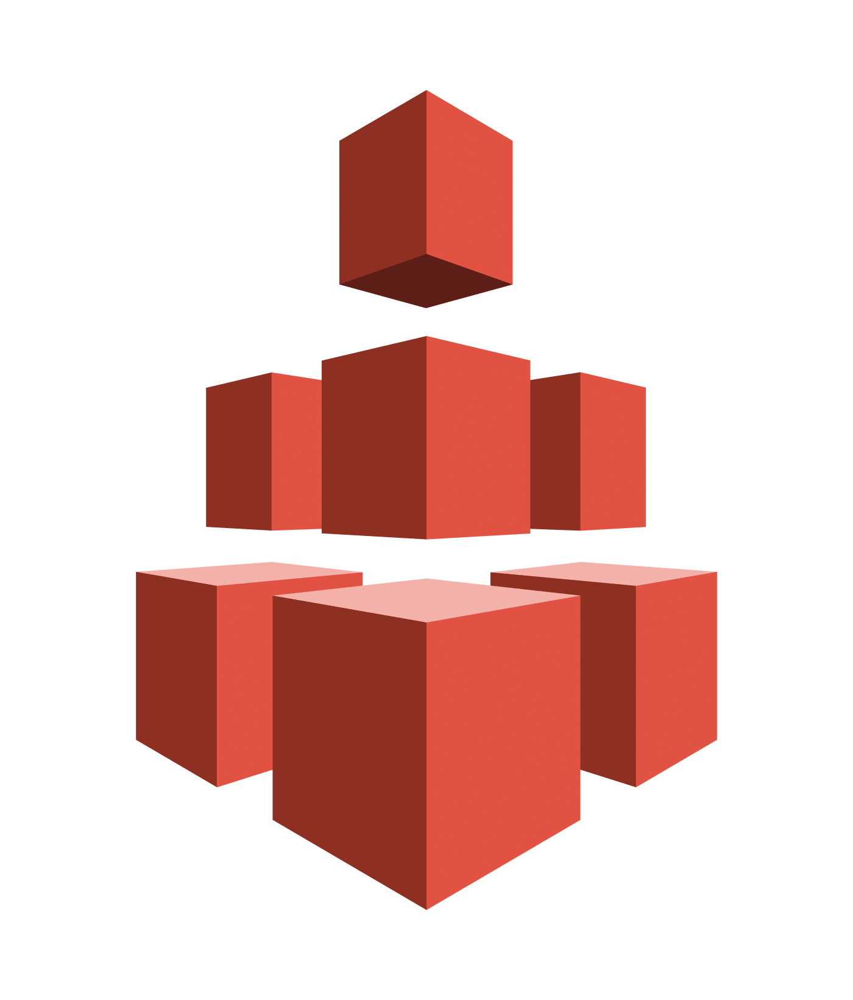
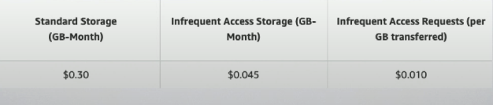
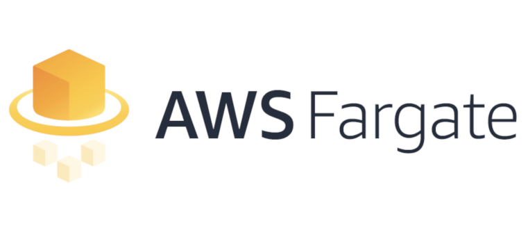

Amazon Web Services
From online book store start to dominating the Internet
In the beginning
- 1994 working at hedge fund
- Internet growing at 2000%!!
- Saw advantage of Internet over mail order catalogs
In the beginning
- 1995: Amazing launches!
- From a garage
- Selling books first was a brilliant move
- Books are compactable and easy to store in warehouse
- During 98 listed on stock market exchange for $18/share
Walking a balance
- Unlike Many companies during the dotcom era, Amazon did generate revenue
- Operated at a loss to fulfill Bezo's long term version
Scaling & investing in future
- Expanding to selling more products
- Supported 3rd party sales
- Started idea of "prime" memberships
- "free shipping"
Innovating
- Nov 2004: Simple Queue Service (SQS)
- Nov 2006: Simple Storage Service (S3), Elastic Compute Cloud (EC2)
Other "Internet" Companies
Cloud Vendors
- Nov 2004: AWS Pilot
- March 2006: AWS EC2 in beta
- April 2008: Google App Engine Pilot
- Oct 2008: AWS ECS starts offering SLA
Cloud Vendors
- Nov 2004: AWS Pilot
- Feb 2010: Microsoft Azure launches
- May 2010: Google Cloud Storage Launches
- Oct 2014: Oracle Cloud launches
Current Numbers
| IaaS |
IaaS + PaaS |
| AWS - 47.8% |
AWS - 33% |
| Microsoft - 15.5% |
Microsoft - 17% |
| Alibaba - 7.7% |
Alibaba - 3 % |
| Google - 4% |
Google - 10% |
| IBM - 1.8% |
IBM - 7% |
The cloud solves all our problems?
Service Offerings

Benefits of IaaS
- Trade cap ex for variable expense
- benefit from economics of scale
- increase speed and agility
- stop spending money on running data centers
- go global in minutes
Building things not on the rails in the cloud
AWS Well Architected Framework
Link
5 Pillars
- Security
- Reliability
- Performance Efficiency
- Cost Optimization
- Operational Excellence
Security
- Apply security at all layers
- principle of least privilege
- focus on securing your system
- automate security practices
Reliability
- Test Recovery procedures
- automatically recover from failure
- Scale horizontally to increase system availability
- Stop guessing at capacity
Performance Efficiency
- Democratize advanced technologies
- Go global in minutes
- Experiment more often
- Mechanical sympathy
Cost Optimization
- Adopt a consumption model
- Benefit from economies of scale
- Analyze expenditure
- Use managed services to reduce cost of ownership
Operational Excellence
- Perform operations with code
- Make regular, small, incremental chagnes
- Test for responses in unexpected events
- Learn for major operational events and failures
- Keep operations procedures current and up to date
AWS LightSail
| Pillar |
AWS Lightsail |
| Security |
Partial |
| Reliability |
Partial |
| Performance Efficiency |
No |
| Cost Optimization |
No |
| Operational Excellence |
No |
AWS Elastic Beanstalk
- "Easy to use" for deploying and scaling applications
- Java, .NET, python, Ruby, Go ... Php
- Apache, Nginx, IIS, Load Balancing
AWS Elastic Filesystem

AWS Elastic Filesystem
- AKA "EFS"
- Shared file system, similar to NFS
- Automated capacity provisioning
- Pay for what you use
AWS Elastic Filesystem
- life cycle - cost savings for infrequently used files

AWS Relational Database Service
AWS Relational Database Serverless
- Cost efficient, resizable, relational database
- MySQL, MariaDB, and Aurora
- Optimized and tuned for you
AWS Relational Database Service
2 varieties
AWS RDS Serverless
- Automatically scales disk space, CPU, memory
- pay for what you use
- "Starts" in < 30 seconds
Provisioned Capacity
- Even with EBS I'm still provisioning servers
- Provisioned capacity, means wasted money.
AWS Fargate
Managed "Kubernetes like"

AWS Fargate
- Run containers without managing servers
- No need to worry about patching, updating, or hardware failover
- pay for CPU and Memory actually used
Elastic Compute Cloud

AWS EC2
- Pay as you go
- Unmanaged Virtualized environment
- Creates Amazon Machine Image (AMI)
- pause & resume instances